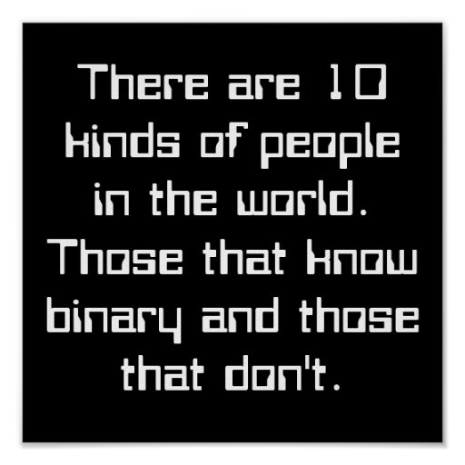

Computer Systems Web Pages
Data Representation

Intagers and Binary
Integers can be represented in binary by using either 1 or 0
For example the integer 2 would be read by the computer as by 010 or 10 but the integer 3 would be 011 or 11 (tip: binary numbers are different from normal numbers so 11 would be one one, not eleven.)
Program Example
You have a simple program where the user will input 3 numbers between 1 and 10 and at the end the program will tell the user those numbers
the user then inputs 3 random numbers :
Input
- 3
- 9
- 5
Process
When inserted the number 3 would be processed by the computer as 011
When inserted the number 9 would be processed by the computer as 1001
When inserted the number 5 would be processed by the computer as 101
Output
After being processed 011 will be convered back into 3 and displayed as 3
After being processed 101 will be convered back into 9 and displayed as 9
After being processed 1001 will be convered back into 5 and displayed as 5
The following link can help you understand binary better